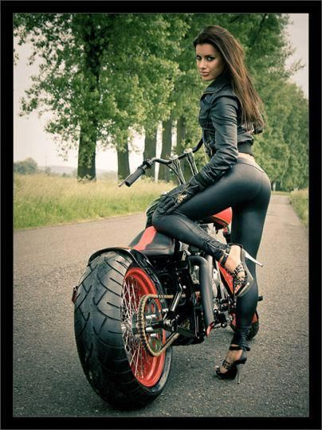
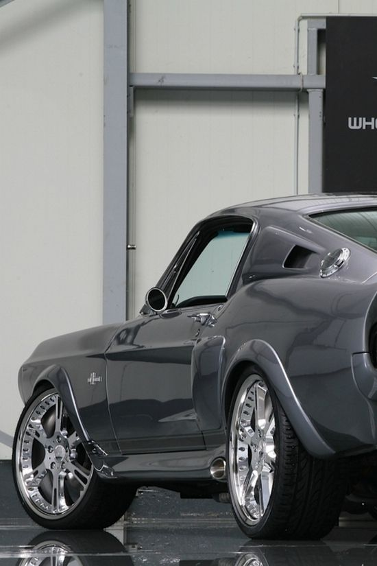

Exemplos - Modelo jQuery Cycle Plugin
You now can put a new twist on your transitions by taking advantage of these in/out options.
Agora você pode colocar novos efeitos em suas transições, aproveitando essas opções de entrada / saída.
|

|

 |
Custom Transitions
Transições personalizadas
cssBefore- The styles that are applied to a slide immediately before it is transitioned in.
animIn- The styles that are animated as a slide is transitioned in.
animOut- The styles that are animated as a slide it transitioned out.
cssAfter- The styles that are applied to a slide immediately after it is transitioned out.
cssFirst- The styles that are applied once to the first slide - the one that is initially showing. This property is a be-kind-to-IE property. It is necessary to keep IE happy when animating out the first slide. Any properties that are animated must have initial values, otherwise IE will bork. These values can be defined in CSS, but this property removes the dependency on the external CSS definition.
You may have just realized that this gives you full control over both the incoming slide and the outgoing slide. You can choose which properties to animate, where the slide should start, etc. Cool!
Use these options, along with the custom fx option, to create transitons that use
different effects for the in and out slides.

|


|
|
|
jQuery Cycle Plugin
Next up: Modelo 1 ››
Blog: Acesse ››